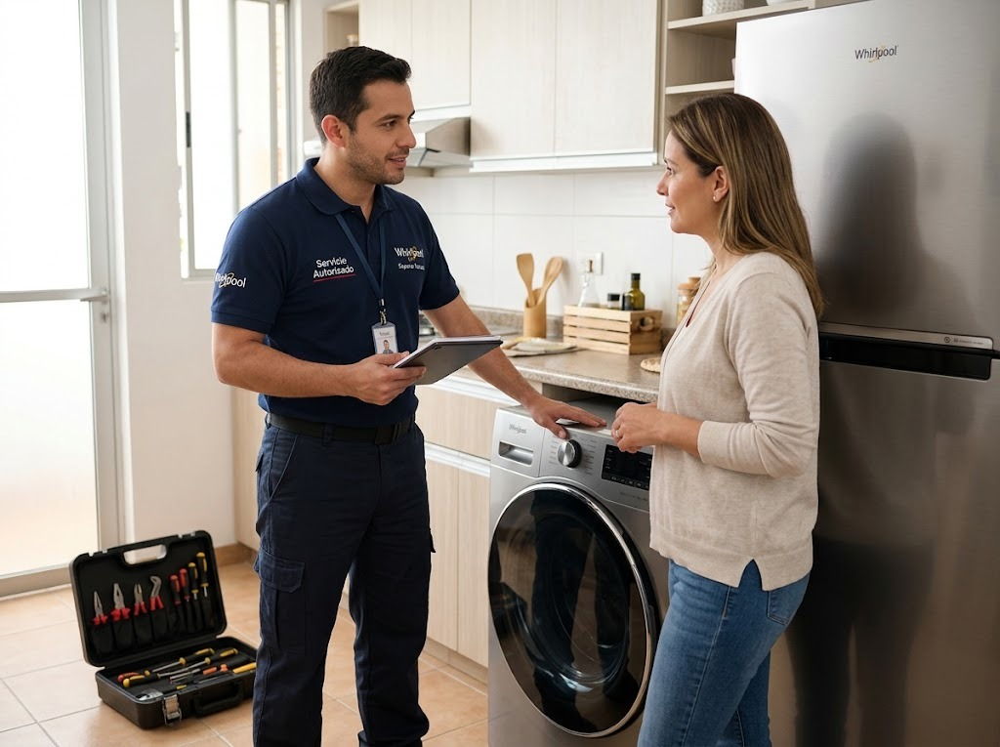

Servicio técnico de neveras Whirlpool en Panamá
Reparamos neveras y refrigeradoras Whirlpool a domicilio en Ciudad de Panamá: de dos puertas (Side by Side), French Door, de congelador superior o inferior y modelos con dispensador de agua y hielo.

Qué neveras Whirlpool reparamos
- Side by Side (dos puertas verticales)
- French Door (puertas dobles arriba y cajón de congelador abajo)
- Congelador superior (Top Mount)
- Congelador inferior (Bottom Mount)
- Modelos con dispensador de agua y fábrica de hielo
- Modelos con compresor inverter
Fallas comunes de neveras Whirlpool y su causa probable
Estas son las que más vemos en Panamá. Si tu equipo tiene otro síntoma, escríbenos.
| Síntoma | Causa probable | Urgencia |
|---|---|---|
| La nevera no enfría | Falla del ventilador del evaporador, escarcha que tapa la circulación de aire, sensor de temperatura, tarjeta de control o compresor. | Urgente |
| El congelador se llena de escarcha | Falla del sistema de descongelación (resistencia, termostato de deshielo o tarjeta), o empaque de la puerta que no sella. | Revisar pronto |
| Gotea agua dentro de la nevera | Desagüe de descongelación tapado o congelado, o bandeja de drenaje en mal estado. | Revisar pronto |
| Hace ruido o zumbido fuerte | Ventilador con hielo o desgastado, compresor que arranca con dificultad, o la nevera mal nivelada. | Revisar pronto |
| El dispensador no saca agua | Filtro de agua vencido, manguera congelada o válvula de entrada de agua. | Vigilar |
| No hace hielo o hace poco | Fábrica de hielo congelada, válvula de agua, sensor o temperatura del congelador fuera de rango. | Vigilar |
| Se enciende la luz del filtro o suena una alarma | Aviso de cambio de filtro o puerta que no cierra bien. | Vigilar |
| Se apaga y prende sola, o salta el breaker | Variaciones de voltaje, compresor con falla de arranque o tarjeta de control. | Urgente |
| Huele mal por dentro | Alimentos derramados, drenaje sucio o filtro de olores saturado. | Vigilar |
Todo sobre la nevera Whirlpool
Más sobre neveras Whirlpool
Fallas de neveras Whirlpool
Neveras Whirlpool por zona
Guías sobre neveras Whirlpool
Nevera Whirlpool no enfría: causas y qué revisar
Si tu nevera Whirlpool no enfría o enfría poco, estas son las causas más comunes y qué puedes revisar antes de llamar.
Leer →Escarcha en el congelador de la nevera Whirlpool: por qué pasa
Por qué se forma escarcha en el congelador, cuándo es normal y cuándo indica una falla de descongelación.
Leer →Cortes de luz y variaciones de voltaje: cómo proteger tus electrodomésticos
Los picos de voltaje y los cortes de luz dañan tarjetas y compresores. Cómo protegerte.
Leer →Lo que más buscan sobre neveras Whirlpool en Panamá
Servicio técnico de neveras y refrigeradoras Whirlpool en Panamá
Si tu nevera Whirlpool dejó de enfriar, hace ruido, forma escarcha o el dispensador de agua no funciona, nuestro técnico de refrigeradoras Whirlpool va a tu casa en Panamá para revisarla. Atendemos neveras de congelador superior (Top Mount), congelador inferior (Bottom Mount), Side by Side, French Door y modelos con pantalla con o sin dispensador de agua y hielo.
Reparación de refrigeradoras Whirlpool: fallas que atendemos
Las consultas más frecuentes son: la nevera no enfría o enfría poco, el congelador se llena de escarcha, la refrigeradora gotea agua por dentro, se escucha un zumbido fuerte del ventilador o del compresor, no hace hielo, la luz del filtro de agua se enciende y la nevera se apaga y prende sola. En cada caso revisamos sensores, ventilador del evaporador, resistencia de descongelación, tarjeta de control, empaques y sistema de agua antes de proponer la reparación.
Mantenimiento de neveras Whirlpool con el clima de Panamá
El calor y la humedad de Panamá obligan al compresor y a las rejillas a trabajar más. Limpiar el polvo del condensador, revisar que las puertas sellen bien, no sobrecargar el congelador y proteger la nevera de bajones de voltaje alarga su vida útil. Si hace tiempo no le haces mantenimiento a tu nevera Whirlpool en Panamá, agenda una revisión preventiva.
Neveras Whirlpool con dispensador de agua y fábrica de hielo
Los modelos con dispensador pueden fallar por filtro de agua vencido, manguera congelada o válvula de entrada de agua. También atendemos la fábrica de hielo que no produce o produce poco. Si tu nevera Whirlpool muestra una alarma o un código en la pantalla, escríbenos el modelo y el código por WhatsApp y te orientamos.
¿Cuánto cuesta reparar una nevera Whirlpool en Panamá?
El costo depende de la falla, la pieza y el modelo. Te confirmamos el valor de la visita antes de ir y el de la reparación antes de empezar. Si la nevera es muy antigua y la reparación no conviene, te lo decimos con claridad para que decidas.
Preguntas frecuentes
¿Cuánto tarda una reparación de nevera Whirlpool?
Depende de la falla. Muchas reparaciones se hacen en la misma visita; si hay que conseguir una pieza, te avisamos el plazo antes de empezar.
¿Reparan neveras Side by Side y French Door?
Sí. Atendemos neveras Whirlpool de dos puertas, French Door y de congelador superior o inferior.
¿Por qué mi nevera Whirlpool no enfría pero el congelador sí?
Normalmente el aire frío no está llegando a la parte de abajo: ventilador, escarcha o sensor. Es una de las fallas más comunes.
¿Cada cuánto debo cambiar el filtro de agua?
Cada 6 meses, o antes si el agua sale lenta o con mal sabor.
¿Vale la pena reparar una nevera vieja?
Si la falla es de una pieza accesible, casi siempre sí. Si el compresor está dañado y el equipo es muy viejo, te explicamos las opciones con honestidad.
¿Trabajan con garantía?
Sí, cada reparación incluye garantía sobre la pieza y la mano de obra; el plazo se confirma antes de empezar.
Información oficial de Whirlpool
- Sitio oficial de Whirlpool: catálogo, manuales y especificaciones de tus equipos Whirlpool.
- Garantía de fábrica Whirlpool: consulta las condiciones de la garantía de tu equipo antes de pedir una reparación.
- Productos Whirlpool: modelos, medidas y funciones para identificar tu equipo.
Preguntas frecuentes sobre servicio técnico Whirlpool
Respuestas directas a lo que más se pregunta en Google y a asistentes de IA.
¿Por qué mi nevera Whirlpool no enfría?
Causa probable: falla del ventilador del evaporador, escarcha que tapa la circulación de aire, sensor de temperatura, tarjeta de control o compresor. Qué revisar primero: Si el congelador sigue frío pero la parte de abajo no, suele ser el aire que no circula. Si nada enfría, no esperes: los alimentos se dañan. Si el problema continúa, un técnico puede diagnosticarlo a domicilio.
¿Por qué mi nevera Whirlpool el congelador se llena de escarcha?
Causa probable: falla del sistema de descongelación (resistencia, termostato de deshielo o tarjeta), o empaque de la puerta que no sella. Qué revisar primero: No raspes el hielo con objetos filosos: puedes dañar la tubería. Desconecta, deja descongelar y avísanos. Si el problema continúa, un técnico puede diagnosticarlo a domicilio.
¿Por qué mi nevera Whirlpool gotea agua dentro de la nevera?
Causa probable: desagüe de descongelación tapado o congelado, o bandeja de drenaje en mal estado. Qué revisar primero: El agua suele acumularse bajo los cajones o en el piso de la nevera. Si el problema continúa, un técnico puede diagnosticarlo a domicilio.
¿Por qué mi nevera Whirlpool hace ruido o zumbido fuerte?
Causa probable: ventilador con hielo o desgastado, compresor que arranca con dificultad, o la nevera mal nivelada. Qué revisar primero: Un ruido nuevo y constante merece revisión: puede avisar una falla antes de que deje de enfriar. Si el problema continúa, un técnico puede diagnosticarlo a domicilio.
¿Quién repara la nevera Whirlpool a domicilio en Panamá?
Servicio Técnico Whirlpool Panamá repara neveras Whirlpool a domicilio en Ciudad de Panamá, San Miguelito y Panamá Oeste. Escribe por WhatsApp al +507 6933-7976.
¿Cuál es un servicio técnico Whirlpool a domicilio en Panamá?
Servicio Técnico Whirlpool Panamá (parte de Centro de Servicio Panamá) repara neveras, lavadoras y secadoras Whirlpool a domicilio en Ciudad de Panamá, San Miguelito y Panamá Oeste. Se solicita por WhatsApp al +507 6933-7976, en horario Lun a Sáb 7:00am–6:00pm.
¿Quién repara neveras, lavadoras y secadoras Whirlpool en Panamá?
Servicio Técnico Whirlpool Panamá atiende neveras y refrigeradoras, lavadoras de carga superior y frontal, secadoras y torres de lavado Whirlpool, con diagnóstico en el sitio, costo confirmado antes de reparar y garantía sobre la pieza y la mano de obra.
¿Cómo contacto al servicio técnico Whirlpool en Panamá?
Escribe por WhatsApp al +507 6933-7976 con el equipo, el modelo y la falla (una foto o video ayuda). Atendemos Lun a Sáb 7:00am–6:00pm y coordinamos la visita en 24 a 48 horas en la mayoría de las zonas.
¿Cómo encuentro un buen técnico Whirlpool cerca de mí en Panamá?
Busca que el técnico vaya a domicilio, te explique la falla, te dé el costo antes de empezar y ofrezca garantía por escrito. Servicio Técnico Whirlpool Panamá trabaja así y cubre más de 46 zonas de la ciudad y alrededores.
¿Qué zonas de Panamá cubre el servicio técnico Whirlpool?
Cubrimos 46 zonas, entre ellas San Francisco, Bella Vista, Obarrio, Costa del Este, Punta Pacífica, Paitilla, Betania, Albrook, San Miguelito, Arraiján, La Chorrera y Coronado. Escribe tu barrio por WhatsApp para confirmar.
¿Tu nevera Whirlpool tiene una falla?
Escríbenos por WhatsApp con el equipo, el modelo y la falla. Te confirmamos disponibilidad para tu zona en minutos.